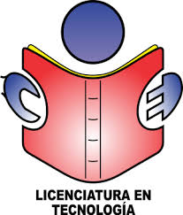

Estudiante de Licenciatura en Tecnología - UPTC
Este ecosistema integra una colección de asistentes inteligentes especializados
diseñados para apoyar procesos académicos, investigativos, pedagógicos,
tecnológicos, agropecuarios y de voluntariado. Su finalidad es facilitar la
realización de actividades profesionales mediante el acceso rápido a herramientas
de inteligencia artificial entrenadas para brindar orientación, generar ideas,
resolver dudas, diseñar documentos y fortalecer la toma de decisiones en
diferentes contextos educativos y sociales.
Cada asistente ha sido desarrollado para responder a necesidades específicas,
permitiendo optimizar tiempos de trabajo, mejorar la productividad y potenciar
el aprendizaje autónomo dentro de un entorno universitario y profesional.
Asesores IA
Disponibilidad
Apoyo Académico
Asistente especializado en programación con Micro:bit, desarrollo de guías didácticas, proyectos STEAM, programación por bloques y MicroPython. Ideal para docentes y estudiantes que desarrollan experiencias educativas basadas en tecnología e innovación.
Asesor académico enfocado en la formulación y desarrollo de proyectos de investigación, tesis y trabajos de grado. Ofrece apoyo en metodología, normas APA 7, redacción científica, análisis documental y construcción de marcos teóricos.
Especialista en estrategias didácticas, gestión de aula, evaluación del aprendizaje y legislación educativa. Diseñado para brindar orientación en situaciones pedagógicas y fortalecer la práctica docente.
Herramienta orientada al sector agropecuario para apoyar procesos productivos, innovación rural, agricultura sostenible y aplicación de tecnologías digitales en el desarrollo del campo.
Asistente especializado en formación juvenil y campismo. Facilita la planeación de actividades, juegos, dinámicas, programas de liderazgo y procesos formativos para jóvenes entre los 14 y 28 años.
Asesor diseñado para apoyar la elaboración de planes de área, mallas curriculares, secuencias didácticas, competencias, estándares y orientaciones curriculares en Tecnología e Informática.